What is Ethereum Metropolis: The Ultimate Guide

Metropolis is upon us! Or at least it’s the first iteration. After a lot of deliberations and updates, the time has finally arrived for the next big jump. There is a lot of buzz going on right now and for good reason. The last time Ethereum did a network shift i.e. from Frontier to Homestead, the price jumped more than 100% from $12 to $30.
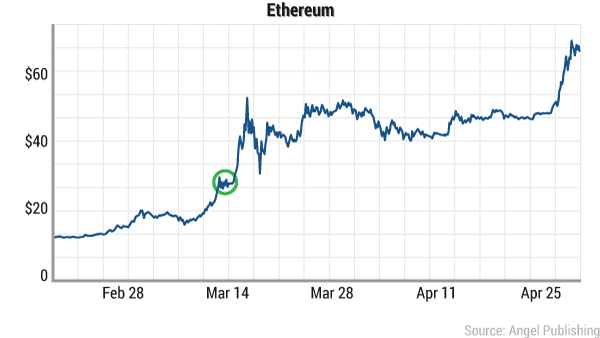Image courtesy: Wealth Daily
So is the price of Ether going to go up?
What are the features that metropolis is going to bring into Ethereum?
Since Ethereum needs to do a hard-fork to get into Metropolis, will it create another new coin? Will we have 3 Ethereum coins (along with ETC and ETH)?
Let’s find that out in this guide.
What is Ethereum Metropolis? The 4 Stages of Ethereum.
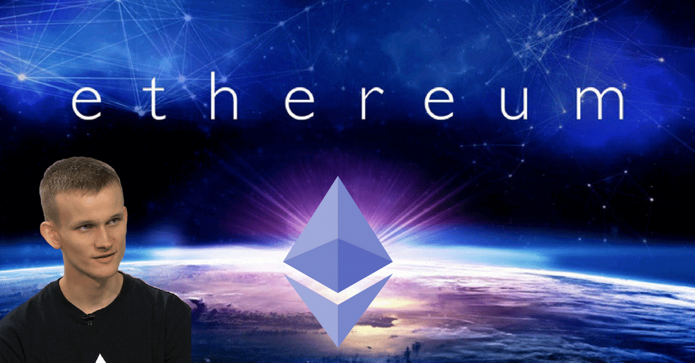This, not the first time Ethereum has upgraded of course and it won’t be the last time. Ethereum was not designed to be just a mode of currency. It was designed to be a platform for decentralized applications. However, before it can do so, it needs to go through various stages of growth. With each stage, Ethereum “levels up” by incorporating more and more properties making its system more robust and seamless.
The complete launch process of Ethereum was divided into 4 stages. This was done to make sure that various phases got their own developmental time and that every stage was developed as efficiently and optimally as possible.
The 4 stages are as follows:
• Frontier: This was what everyone got when Ethereum was first launched.
• Homestead: The stage that we are on as of writing.
• Metropolis: The upcoming phase.
• Serenity: The final stage.
Metropolis is the 3rd stage in the 4-stage process and there are a lot of interesting features that are coming as and when it gets implemented. Here are some of the main ones which are going to have plenty of repercussions.
• Zk-Snarks.
• Proof of Stake early implementation.
• Flexibility and robustness of smart contracts.
• Account Abstraction.
Let’s go through each and every one of them one-by-one.
Feature #1: Zk-Snarks
One of the biggest and most important features that Metropolis is bringing along is the implementation of Zk-Snarks. Zk-Snarks stands for “Zero-Knowledge Succinct Non-Interactive Argument of Knowledge”. Zk-Snarks is based on zero knowledge proof.
What is Zero Knowledge Proof?
There are two parties when it comes to a zero-knowledge proof (as stated above), the prover and the verifier. Zero knowledge states that a prover can prove to the verifier that they possess a certain knowledge without telling them what that knowledge actually is
Properties of a zero knowledge proof (ZKP)
For a ZKP to work it needs to satisfy certain parameters:
• Completeness: If the statement is true then an honest verifier can be convinced of it by an honest prover.
• Soundness: If the prover is dishonest, they can’t convince the verifier of the soundness of the statement by lying.
• Zero-Knowledge: If the statement is true, the verifier will have no idea what the statement actually is.
So now that we have a basic idea of what a zero-knowledge proof is, let’s checkout an example of it before we dive deep into zk-snarks and its application in the blockchain.
Zero-Knowledge Sudoku
For those who don’t know, Sudoku is a Japanese puzzle where you get a 9X9 table which looks something like this:
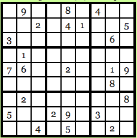Image courtesy: Computational Complexity Blog.
The idea is to fill up every row, every column and every 3X3 block with numbers from 1-9 and no number should repeat itself. So, the solution for the puzzle above looks like this:
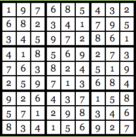Image courtesy: Computational Complexity Blog.
As you can see, every row, column, and 3X3 block is unique and not a single number has been repeated. Let’s go back to our old friends Anna and Carl. Anna has found the solution to the Sudoku puzzle and Carl, skeptic that he is, doesn’t believe her and wants Anna to prove that she does indeed know the solution. Anna wants to prove her honesty, but at the same time, she doesn’t want Carl to know the exact solution of the puzzle. How will she go about it? Anna is going to use Zero Knowledge to prove the validity of her claim.
Firstly, Carl will run the Sudoku solution through a computer program which has been verified, to be honest, and the program will run the numbers through a randomly chosen substitution cipher. Say, for this particular problem the cipher that the program has chosen is this:
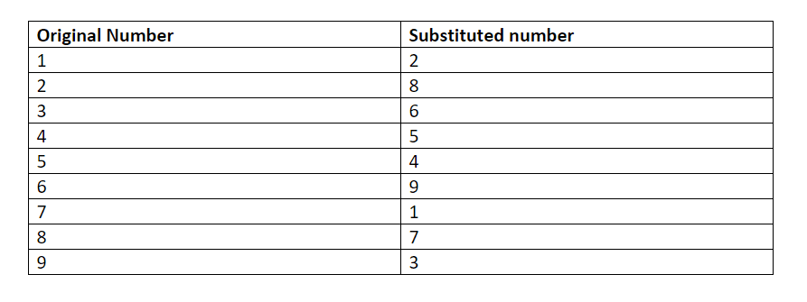The chosen program and cipher is such that each digit has the same chance of being transmuted into its substitution as any other number. Basically, 1 has as much chance of being transmuted as 3 and 4 has as much chance of being transmuted as 9 and so on and so forth. So, using this cipher gives us the following solution to the puzzle above:
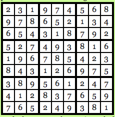Image courtesy: Computational Complexity Blog.
Anna gets the transmuted solution now, keep in mind that Carl still doesn’t know what the original solution was and he doesn’t possess the transmuted solution either. So, what Anna does now is that she hides all the numbers in the puzzle by using a “lockbox mechanism”, basically Carl won’t be able to see any of the numbers and will see an empty 9X9 grid in front of him.
Carl now has 28 choices in front of him:
• Reveal a row.
• Reveal a column.
• Reveal a 3X3 box.
• Reveal the transmuted version of the original puzzle.
Suppose Carl wants to know what the third row looks like:
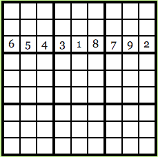Image courtesy: Computational Complexity Blog.
This is what he will see. Carl will see that every number in the row is unique and since every possible number in the original solution had the same probability of being transmuted via the cipher, Carl will have no clue as to what the original solution is.
Now suppose, Carl decides to take the last option and wants to see what the original puzzle in looks like when transmuted:
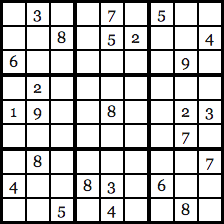Image courtesy: Computational Complexity Blog.
Once again, since the cipher was chosen at random and all the numbers have the same probability of being transmuted, Carl will have no idea what the original solution is. Carl can now go through all 28 of his choices and eventually he will be satisfied with the validity of Anna’s statement.
Why?
Because, if Anna was indeed cheating, there is no way that she could have found a cipher to give unique solutions for all 28 of Carl’s choices. If Carl just chooses one option, Anna’s chances of getting away with cheating are 27/28. BUT if Carl chose to do random test multiple times, suppose he chooses to test it 150 times, Anna’s choice of getting away with cheating drops down to (27/28) ^150 which is < 0.5%.
So, let’s check out the zero-knowledge properties of this scenario:
• Completeness: The cipher program being used has been verified, to be honest, and both Anna and Carl are following protocol.
• Soundness: If Carl does random tests 150 times, Anna’s chances of getting away with cheating is < 0.5%.
• Zero-Knowledge: Anna never had to reveal to Carl what the original solution was.
So, that’s how zero knowledge works in the “real world”. How do we implement zero knowledge in code via zk-snarks and what is its use in the blockchain?
What is the use of Zk-Snarks?
Zk-Snarks stands for “Zero-Knowledge Succinct Non-Interactive Argument of Knowledge”. Its use in modern blockchain technology is immense. To understand its application, it is important to know how a smart contract works. A smart contract is basically an escrow of funds which gets activated once a particular function is done.
Eg. Anna puts 100 ETH in a smart contract that she gets into with Carl. Carl has to do a particular task, on the completion of which, Carl will get the 100 ETH from the smart contract.
This gets complicated when then tasks that Carl has to do are multi-layered and confidential. Suppose you have entered a smart contract with Anna. Now, you will only get the payment if you do A, B and C. What if you don’t want to reveal the details of A, B and C because they are confidential to your company and you don’t want any competitors to know what you have to do?
What Zk-Snarks does is that it proves that those steps have been taken in the smart contract without revealing what those steps actually are. It is very useful is protecting you and your company’s privacy. It can just reveal part of the process without showing the whole process itself and prove that you are being honest about your claims.
How does a Zk-Snark work
A Zk-Snark consists of 3 algorithms: G, P and V.
G is a key generator takes an input “lambda” (which must be kept confidential and shouldn’t be revealed under any circumstances) and a program C. It then proceeds to generate two publicly available keys, a proving key pk, and a verification key vk. These keys are both public and available to any of the concerned parties.
P is the prover who is going to use 3 items as input. The proving key pk, the random input x, which is publicly available, and the privacy statement that they want to prove the knowledge of without revealing what it actually is. Let’s call that private statement “w”. The P algorithm generates a proof prf such that: prf = P(pk, x,w).
The verifier algorithm V has basically returned a boolean variable. A Boolean variable has only two choices, it can be TRUE or it can be FALSE. So, the verifier takes in the verifying key, public input x and proof prf as input such as:
V(vk,x,prf)
..and returns TRUE if the prover is correct and false otherwise.
Now, about the parameter lambda. The value of the “Lambda” must be kept confidential because then anyone can use it to generate fake proofs. These fake proofs will return a value of TRUE regardless of whether the prover actually has knowledge of private statement “w” or not.
Functionality of Zk-Snark
For showing the functionality of a Zk-Snark we are going to use the same example function that Christian Lundkvist used in his article for Consensys.
This is what the example program looks like:
function C(x, w)
{
return ( sha256(w) == x );
}
Basically, the function C takes in 2 values as input, a public hash value “x” and the secret statement that needs to be verified “w”. If the SHA-256 hash value of w equals “x” then the function returns TRUE otherwise it returns FALSE. (SHA-256 is the hash function that is used in Bitcoin).
Let’s bring back our old friends Anna and Carl for this example. Anna being the prover and Carl the skeptic is the verifier.
The first thing that Carl, as the verifier, has to do is to generate the proving and verifying key using the generator G. For this, Carl needs to generate the random value “lambda”. As stated above, however, he needs to be super careful with Lambda because he can’t let Anna know its value to stop her from creating fake proofs.
Anyway, this is what that will look like:
G(C, lambda) = (pk , vk).
Now that the two keys are generated, Anna needs to prove the validity of the statement by generating the proof. She is going to generate the proof using the proving algorithm P. She is going to prove that she knows the secret value “w” which hashes (on parsing through SHA-256) to give the output x. So, the proving algorithm for proof generation looks like this:
prf = P( pk, x, w).
Now that she has generated the proof “prf”, she is going to give the value to Carl who is finally going to run the verification algorithm of Zk-Snarks.
This is what that will look like:
V( vk, x, prf).
Here, vk is the verifying key and x is the known hash value and prf is the proof that he has gotten from Anna. If this algorithm returns TRUE then this is means that Anna was honest and she indeed had the secret value “w”. If it returns FALSE then this means that Anna was lying about knowing what “w” is.
Zk-Snark and Ethereum
Ethereum has been closely working with ZCash (Zero Cash, the cryptocurrency completely based on Zk-Snarks). If there is anyone who can show them how to incorporate zk-snarks on the blockchain it’s them. We, personally, cannot wait to see how Metropolis will be incorporating Zk-Snarks.
Feature #2: Proof Of Stake Early Implementation
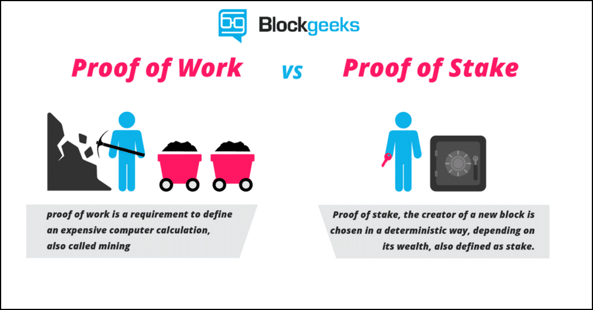So what is the difference between proof of stake and proof of work?
• Proof of work: This is the protocol that most cryptocurrencies like Ethereum and Bitcoin have been following so far. This means that miners “mine” cryptocurrencies by solving crypto-puzzles using dedicated hardware.
• Proof of stake: This protocol will make the entire mining process virtual. In this system, we have validators instead of miners. The way it works is that as a validator, you will first have to lock up some of your ether as stake. After doing that you will then start validating blocks which basically means that if you see any blocks that you think can be appended to the blockchain, you can validate it by placing a bet on it. When and if, the block gets appended, you will get a reward proportional to the stake you have invested. If, however, you bet on the wrong or the malicious block, the stake that you have invested will be taken away from you.
To implement “proof of stake” Ethereum is going to use the Casper consensus algorithm. In the beginning, it is going to be a hybrid style system where the majority of the transactions will still be done proof of work style while every 100th transaction is going to be proof of stake. What this will do is that it will provide a real-world test for proof of stake on Ethereum’s platform. But what does that mean for Ethereum and what are the advantages of this protocol? Let’s take a look.
Advantages of proof of stake
• Lowers the overall energy and monetary cost: The world’s bitcoin miners spend around $50,000 per hour on electricity. That’s $1.2 million per day, $36 million per month and ~$450 million per year! Just put your head around those numbers and the amount of power being wasted. By using “Proof-of-stake” you are the making the whole process completely virtual and cutting off all these costs.
• No ASIC advantage: Since the whole process will be virtual, it wouldn’t depend on who has the better equipment or ASICs (application-specific integrated circuit).
• Makes 51% attack harder: 51% attack happens when a group of miners gain more than 50% of the world’s hashing power. Using proof of stake negates this attack.
• Malicious-free validators: Any validator who has their funds locked up in the blockchain would make sure that they are not adding any wrong or malicious blocks to the chain, because that would mean their entire stake invested would be taken away from them.
• Block creation: Makes the creation of newer blocks and the entire process faster. (More on this in the next section).
• Scalability: Makes the blockchain scalable by introducing the concept of “sharding” (More on this later.)
Even though there have been various simplistic implementations of Proof of Stake before, what separates Casper from the rest is that it incentivizes the honest miners and punishes the dishonest ones. If you have put your stake on a malicious block, then the stake will be taken away from you. It will punish anyone who doesn’t play by the rules.
This is how Vitalik explains it:
“Imagine 100 people sitting around a circular table. One person has a bundle of papers, each with a different transaction history. The first participant picks up a pen and signs one, then passes it onto the next person, who makes a similar choice. Each participant only gets $1 if they sign the transaction history that most of the participants sign in the end. If you sign one page and later sign a different page, your house burns down,”
He then added that this is probably a good incentive to sign the right piece of paper!
• What is the difficulty time bomb?
• What is there to incentivize the miners to move from a proof-of-work protocol to a proof-of-stake protocol?
Miners buy thousands of dollars’ worth of equipment so that they can mine for blocks. The moment POS comes on board; all that equipment becomes worthless. Imagine spending so much money and having super intricate pools set up, and all that becoming completely useless.
If that is the case, then what is there to stop the miners from staying on the old proof-of-work chain and continue mining on it? This will, in essence, create three Ethereum coins: Ethereum Classic, Ethereum Proof-of-work and Ethereum Proof-of-stake. That is going to be an absolute nightmare.
Not only will that greatly decrease the economic value and credibility of Ethereum, it is also going to dilute the hashrate of the overall chain which can make it vulnerable to hacker attacks.
In order to make sure that there is the proper incentive to miners to join the new chain, the Ethereum developers introduced the difficulty time bomb. The time bomb was introduced on 7th September 2015. To understand how the difficulty time bomb works, it is important to understand how difficulty and mining works.
What is difficulty and how does it work?
The concept of difficulty started with bitcoin. When bitcoin was first introduced, mining was extremely simple and anybody could do it using their PC. However, as bitcoin got more and more popular the number of miners on the network increased. This raised a very real possibility of miners going out of control and mining out all the remaining bitcoins in the space of a year. Satoshi Nakamoto envisioned this happening and hence introduced the “difficulty” system.
The difficulty system works like this: Miners spend their computational power to solve cryptographic puzzles. The way they do that is that they randomly append a random string (called nonce) to the hash of the block and then they hash the whole string. If the resulting number is less than a particular fixed number, then it is considered to be successful and the new block is added to the blockchain. Finding this “nonce” is extremely difficult and random and that is the heart of all mining.
If we were to recap the whole process then this is what it would look like:
• The hash of the contents of the new block is taken.
• A nonce (random string) is appended to the hash.
• The new string is hashed again.
• The final hash is then compared to the difficulty level and see whether it’s actually less than that or not.
• If not, then the nonce is changed and the process repeats again.
• If yes, then the block is added to the chain and the public ledger is updated and alerted of the addition.
• The miners responsible for this given the block reward.
The difficulty is adjusted every 2016th block.
The difficulty level is directly proportional to the rate at which the blocks are being mined. Bitcoin has an average block time of 10 seconds.
If the block time goes below that, then the difficulty level is increased, if it goes up, then the difficulty time decreases. This is done to make sure that the block time of bitcoin stays ~10 seconds.
This is basically how bitcoin mining works and Ethereum follows the same protocol as well.
So what will the difficulty time bomb do?
The difficulty bomb will exponentially increase the difficulty so much so that mining will become impossible.
Like we have said before, the difficulty level adjusts according to the rate at which the blocks are being mined. The Ethereum difficulty adjustment algorithm looks like this:
block_diff = parent_diff + parent_diff // 2048 * max(1 – (block_timestamp – parent_timestamp) // 10, -99) + int(2**((block.number // 100000) – 2))
(In here “//” is the division operator such that 6//2 = 3 and 9//2 = 4.)
So, let’s understand what that basically means in plain English:
Block_timestap = the time at which the block was mined.
Parent_timestamp = the time at which the parent block aka the block before this was mined.
• If (block_timestamp – parent_timestamp) < 10 seconds then a factor of “parent_diff // 2048 * 1” is added to the difficulty.
• If (block_timestamp – parent_timestamp) is between 10-19 seconds then the difficulty is kept the same.
• If (block_timestamp – parent_timestamp) > 20 seconds then the difficulty is reduced by “parent_diff // 2048 * -1” to a maximum of “parent_diff // 2048 * -99”.
This is how the difficulty adjustment algorithm worked in the Homestead version of Ethereum. The idea is to keep the block time ~15 seconds.
So, what the difficulty bomb is going to do is that it will increase the difficulty by such an exponential amount without adjusting it that it will take more and more time to solve the cryptographic puzzles. Eventually, it will become near impossible to mine on the chain. This phenomenon is called the “Ethereum Ice Age”, the time all mining POW style becomes impossible.
When this happens, the miners will have no option BUT to go the new Ethereum chain which has Proof-Of-Stake on it.
Will this be utilized in Metropolis?
The difficulty time bomb is supposed to explode at the end of 2017 but it looks like it has been delayed by a year and a half. However, with Metropolis, the development team has made two changes that will smooth the process over to POS.
• Casper will be applied and as mentioned above, every 100th block will be mined via proof of stake.
• The mining reward is going to decrease from 5 ether to 3 ether.
The goal is to get the entire network used to Proof of Stake protocol and to iron out all the issues before fully utilizing it in Serenity.
Feature #3: Robustness and Flexibility of Smart Contracts
What are smart contracts?
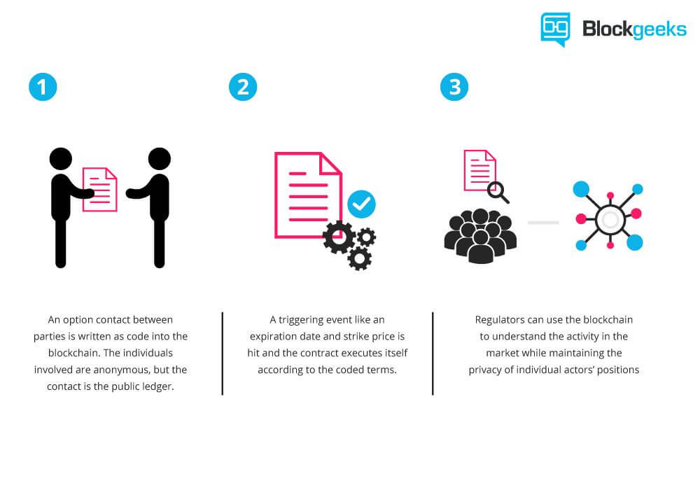It won’t be an exaggeration to say that Smart Contracts are the lifeblood of ethereum.
Smart contracts are how things get done on ethereum. The idea is simple. Imagine A and B getting a transaction or a function done without the intervention of a third party. Suppose A tells B to do a task for which B charges 1 ETH. A puts that 1 ETH in a “box”. If B does the task then that 1 ETH goes to B, if he doesn’t then that 1 ETH goes back to A. The “box” in this analogy is a smart contract. This is a rough analogy to help you understand how it works.
So, what are the innovations that Ethereum is bringing along to make their smart contracts better and more easy to develop?
Let’s understand how things function in Ethereum.
Suppose A gives B a smart contract to execute. Each and every function in that contract requires the use of certain computational power on B’s side. This computational power is called “gas”. The money required to pay up for this gas is called “ether”. The gas price chart looks like this:
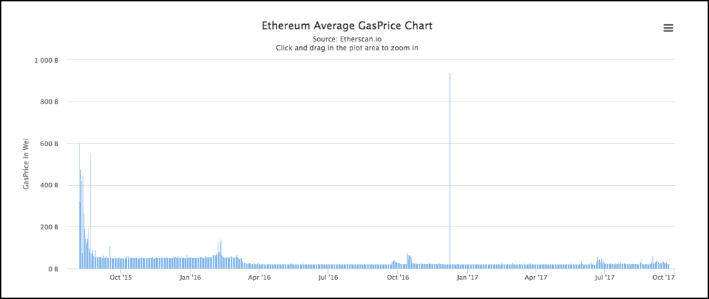Image courtesy: Etherscan
Now, while bitcoin usually spends the same computational power for all transactions, Ethereum can vary the computational power required for each of its contracts. Each contract has its own gas limit which is set by the contract giver. This can lead to two scenarios:
• The gas required is more than the limit set. If that’s the case then the state of contract is reverted back to its original state and all the gas is used up.
• The gas required is less than the limit set. If that’s the case, then the contract is completed and the leftover gas is given over to the contract setter.
During a contract execution if one wishes to go back to an earlier state during the execution, it would require manual triggering of an exception eg. if one were to cancel a transaction then they will have to double spend to stop it from going through. In order to revert a contract back to its original state developers use the “throw” function. While the throw function does help the contract’s state to go back to the previous one, it eats up all the gas in the contract.
To counter this problem, Metropolis is beefing up the “revert” function to help the contracts go back to the previous state without eating up all the gas. The unused gas will be refunded to the contract creator. Along with the revert function, Metropolis is introducing the “returndata” opcode which will enable contracts to return variable sized values.
Feature #4: Account Abstraction
Before we get into what account abstraction means, let’s understand what abstraction means. Abstraction means that anyone can use any system or protocol without completely knowing the ins and outs and all the technical details. Eg. When you use your iPhone, you don’t need to be a programmer or an engineer to operate it. You simply press on the screen to activate an app, or press on the call button to call someone. You don’t need to know how pressing certain apps activates the circuit inside the phone or how certain apps were programmed. Abstraction makes a complex technology accessible to the masses by removing the complexities.
Abstraction is what Ethereum plans to achieve in the future. In a hypothetical decentralized future, they envision everyone to use DAPPS without even realizing that they using a DAPP based on Ethereum. They basically want Ethereum to “disappear” in the background. Metropolis is taking a major step towards doing just that by introducing “Account Abstraction”.
As part of abstraction, Ethereum is planning to blur the line between its two accounts. Ethereum, as of writing at least, has two accounts. One is the external account, the one controlled by keys that most users are aware of i.e. wallet accounts. Then you also have the contract account aka the smart contract code in the blockchain. The idea is to essentially allow users to define their external accounts in the form of a smart contract.
Once this is done, the codes backing the keys can put their own unique spin on the transactions backing the code. How does that help? As you may be aware that Quantum computing is fast becoming a possible threat to the cryptography which makes the cryptocurrencies. So suppose you want to save your transactions from a quantum attack by a malicious attacker, what can you do about it?
With account abstraction, you can use signature schemes like hash ladders to define your own account which has a possibility of being quantum proof. Your accounts can now be customizable quite like a smart contract.
What are Byzantium and Constantinople?
The terms “Byzamtium” and “Constantinople” is being thrown all around in the cryptosphere. What do they mean? Metropolis is bringing in a lot of significant changes at the same time. It won’t be possible to bring in all these changes at one go and not overwhelm the users and the developers. This is why, Ethereum is launching Metropolis in two phases and both will be introduced as hardforks.
These two phases are:
• Byzantium.
• Constantinople.
After a lot of delays, Byzantium hardfork will now occur at block number 437,000,000, or about October 17 given current block production metrics.
Byzantium will introduce a lot of features. The main ones being:
• Zk-Snarks.
• Revert and returndata.
• Account abstraction.
It is not clear when Constantinople will happen but it is being planned to take place in 2018. The main feature of it is to smooth out all the issues that may come up because of Byzantium and, more importantly, to introduce the proof-of-stake and proof-of-work hybrid chain.
So Ethereum is going to hard fork again? Will there be a third ethereum coin?
No, there won’t be.
Because of the Ethereum-Ethereum Classic and the Bitcoin-Bitcoin Cash hardforks, people have started to assume that all hard forks are bound to cause chain splits. That is simply not the case.
The reason why those forks split the chain was because the changes proposed (the ethereum hardfork and the Segwit activation) were so controversial that not everyone was on board.
However, these upgrades have been unanimously agreed upon for a long time. Everybody knew that this was going to happen. This hardfork is not the result of an emergency, this hardfork is the result of an upgrade, which is why there won’t be any community split and there won’t be a new coin.
The only bone of contention could be the proof-of-stake hardfork, however, the miners are not going to gain much by remaining on the old chain since, as already discussed, the difficulty bomb will make mining near impossible.
Ethereum Metropolis Conclusion: What is going to happen now?
So, is the value of ether going to go up?
We don’t know, we are not financial advisors. You need to do your own research before you invest in a coin. However, what we can say for sure is that they last time ethereum upgraded, the value went up >100%..
Byzantium is bringing in so many changes to Ethereum that it will be fascinating to see how things turn out. The implementation of zk-snarks is particularly game changing and of course, Constantinople with its proof of stake is going to be something that everyone in the crypto world is going to keep their eye on. The upcoming year could be absolutely revolutionary for Ethereum and their dream of a decentralized future.